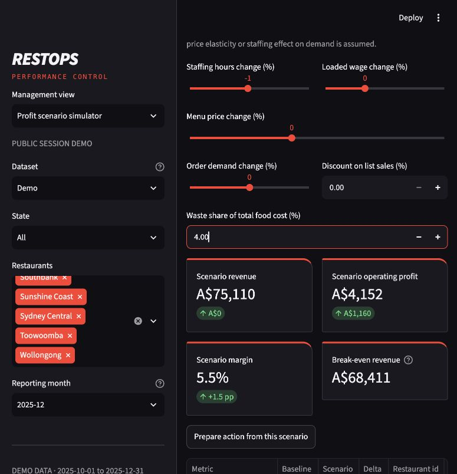
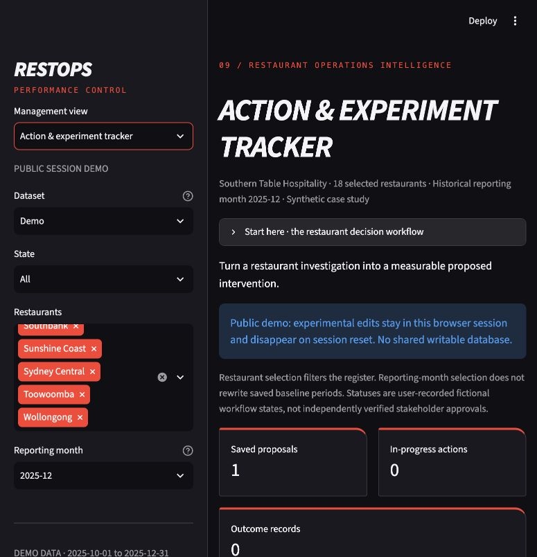

02 / Restaurant operations & profitability · Formerly OpsPulse
RESTOPS
Turn a restaurant’s missed targets into a reconciled investigation, a costed scenario and a measurable proposed intervention.

01 / The problem
Start with the decision.
An area manager can see that a restaurant is missing its margin target, but still needs to distinguish sales movement from labour, ingredient and waste costs. An operational recommendation also needs a baseline, a proposed owner and service guardrails.
The decision to support
What explains the margin gap, which operating assumptions are worth testing and how would the proposed intervention be measured?
02 / The approach
Connect the business and the model.
- Reconcile before recommending. A volume, basket and cost bridge explains operating-profit movement without double-counting costs. Separate data grains and SQL reconciliation keep the investigation tied to the ledger.
- Test operating assumptions. The scenario tool evaluates six operating assumptions. Users can hold demand and prices fixed while checking the conditional effect of labour and waste changes.
- Make the proposal measurable. The action tracker records frozen baselines, fictional owners, review dates and satisfaction or delivery guardrails. It distinguishes a proposal from an approved or achieved outcome.
- Evaluate forecasts chronologically. Forecast selection uses validation data and is assessed on a later holdout. Calendar ridge’s documented holdout MAE is about A$452 per store-day; this describes fictional historical data, not current trading performance.
03 / A worked example
What the evidence reveals.
Conditional modelled profit difference · Not achieved savings
A$1,160Wollongong’s synthetic December baseline is A$75,110 revenue and A$2,992 operating profit, a 4.0% margin. Reducing staffing hours by 1% and setting waste to 4%, with demand and prices unchanged, estimates profit around A$4,152.
Treat the modelled difference as a hypothesis. Check whether the changes are operationally feasible, retain satisfaction and delivery guardrails, and define an observational comparison before any pilot. The seeded action is an unapproved proposal with no outcomes.




04 / Inspect the work
Evidence beyond the screen.
The repository includes SQL reconciliation, model evaluation, scenario checks and an upgrade-validation record. BA artefacts connect requirements to acceptance scenarios. The demo is reproducible from committed synthetic aggregates; developer validation does not establish real-manager acceptance.
Explore the source and delivery artefacts below.
05 / Project boundaries
Be clear about what is demonstrated.
All restaurants, data and seeded action owners are fictional. No live POS integration, authentication or hosted application is claimed. Scenario improvements are conditional; promotion estimates are observational. No native Tableau workbook has been verified. Staffing suggestions are analytical assumptions, and forecasts extend fictional history.
Development used AI assistance. The repository documents the implementation and developer checks; simulated discovery and acceptance exercises do not replace real stakeholder participation.